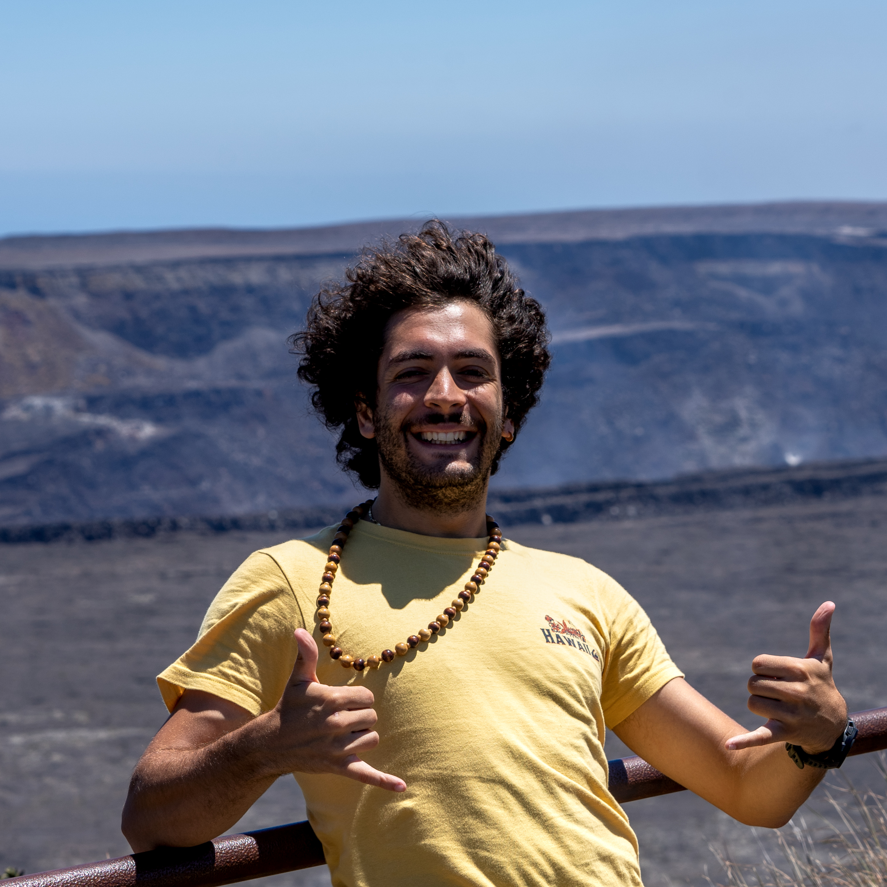

26Jan 2026
Conference
Space It Up! Days — Firenze
Three poster presentations at the first plenary congress of the Space It Up! project.
Geologist with a passion for applied mineralogy and building materials — from cultural heritage preservation to modern construction innovations and future space applications. Currently Postdoctoral Research Fellow at CISAS, University of Padova.

Born in 1994, I realized at 16 that I wanted to devote myself to studying rather than my two other youthful passions: karate and saxophone. Considered myself a "complete time waster" until 21, then I decided to apply my talent for geology in the direction of mineralogy.
My journey includes a Marie Curie doctorate at the University of Granada (SUBLime project), where I focused on self-cleaning lime-based materials through biomimetic approaches, studying amorphous-crystalline transitions and surface modifications. Now I'm a Postdoctoral Research Fellow at CISAS, working within the "Space It Up" project funded by ASI and MUR, characterizing terrestrial analogues and lunar regolith simulants for extraterrestrial construction.
I live in Padova, stubbornly following bizarre ideas such as reviving the cult of calcite and its pillars, and pushing to understand other planets because one is not enough. A devoted Inter Milano supporter. Convinced that pasta was the greatest leap in human progress until the Internet. My neighbors wish I didn't play vinyls with peculiar tastes.
Latest updates from research, conferences, and life.
Three poster presentations at the first plenary congress of the Space It Up! project.
New paper in Materials Today Advances on Etnean deposits as high-fidelity lunar simulants for ISRU applications.
Joined the "Space It Up" project, focusing on lunar regolith simulants and extraterrestrial construction materials.
Dig deeper into research, publications, and everything else.
Education, work experience, research training, conferences, and affiliations.
View CVPeer-reviewed articles, conference proceedings, and co-authored works organized by year.
View PublicationsPhotography, outdoor, music, geology thoughts, and more — each with its own blog.
ExploreGet in touch for collaborations, questions, or just to talk about minerals.
Contact Me